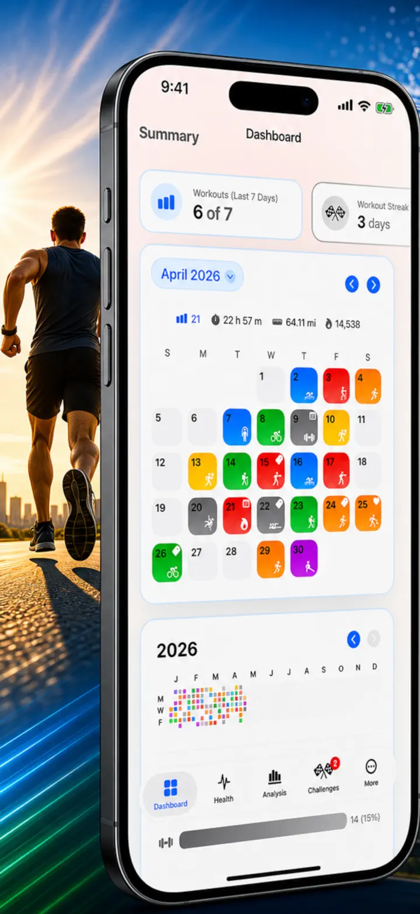
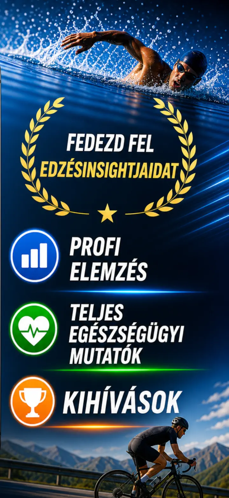
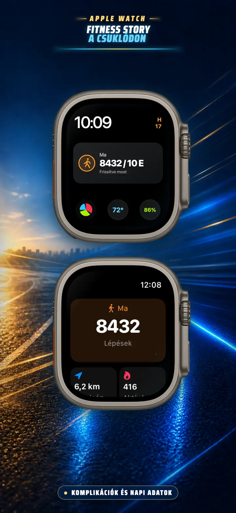
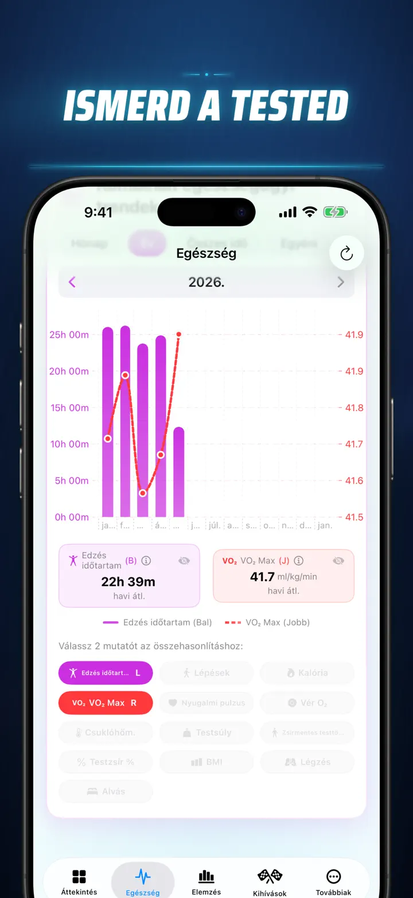
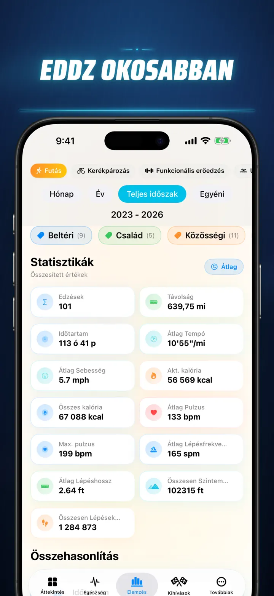
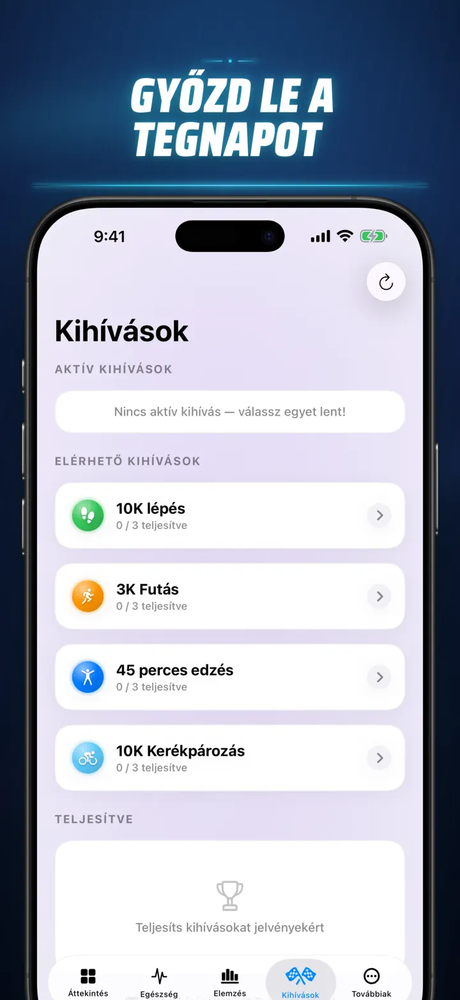
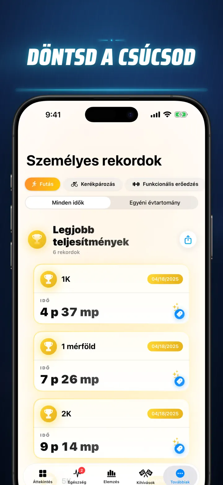
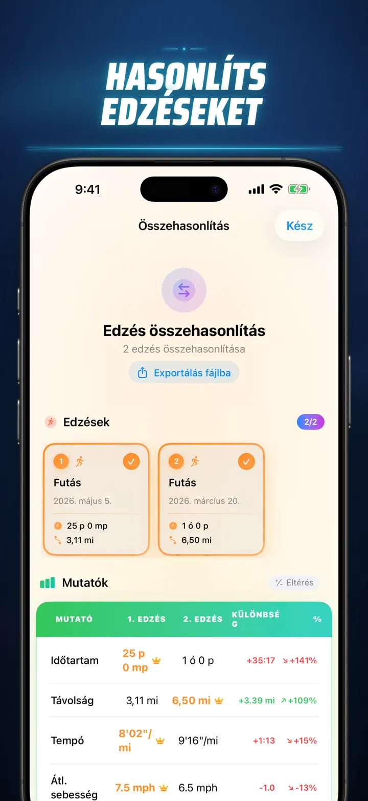
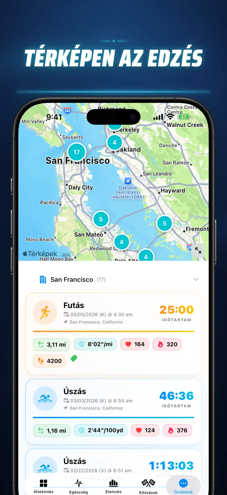
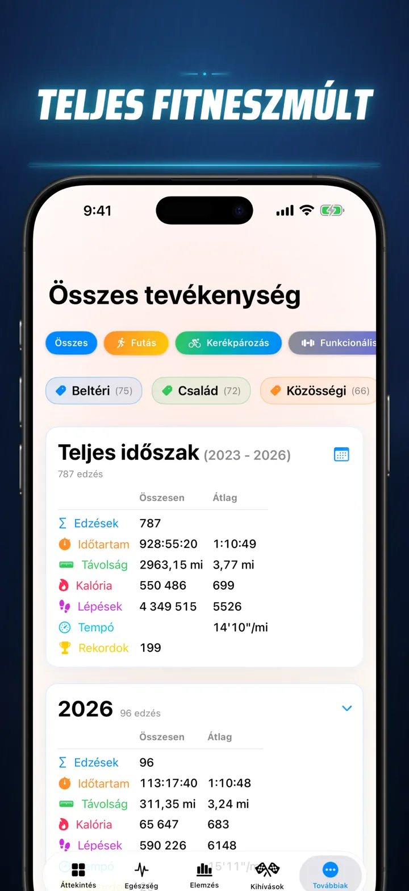

Fitness Story
Fedezd fel edzésadataidat!
Már az Apple Watchon is: a mai lépéseid bármelyik óralapon, plusz egy Ma képernyő távolsággal, kalóriával és emeletekkel — egyenesen az Apple Egészségből.
Letöltés az App Store-ból
Az alkalmazásról
Hagyd abba a találgatást. Kezdj el tudni. A Fitness Story az Apple Egészség adataidat iOS leghatékonyabb és legrészletesebb elemzésévé alakítja át. Nincs fiók. Nincs szerver. Csak a teljes fitnesz utad, vizualizálva.
Legyen szó alvási fázisok követéséről, futókadencia elemzéséről vagy maratonrekord hajszolásáról – ez az az all-in-one irányítópult, amelyet a kemény munkád megérdemel.
Minden olyan eszközzel és alkalmazással működik, amely szinkronizál az Apple Egészséggel — Apple Watch, Garmin, Polar, Suunto, Zwift és még sok más.
PROFI SZINTŰ ELEMZÉS
- Trend- és összehasonlító diagramok: Box-and-whisker grafikonok segítségével lásd az átlagot, kvartiliseket és kiugró értékeket minden sporttípusnál.
- Részletes bontások: Szűrd az előzményeket napszak, távolságtartományok, időtartam, tempóintervallumok, szintemelkedés, kadencia és lépéshossz szerint.
- Rangsorolj mindent: Egyetlen koppintással rangsorolod a mai mérőszámokat (távolság, tempó, pulzus stb.) a teljes előzményedhez képest. Tudd meg azonnal, hogy elértél-e egy „Top 15%"-os teljesítményt.
- Hozzájárulási grafikon: A teljes edzéstörténeted GitHub-stílusú hőtérképe. Fordítsd meg a részletes napi statisztikákért.
EDZÉSRÉSZLETEK ÚJRAGONDOLVA
- Okos térképek: Színkódold a szabadtéri útvonalakat sebesség, magasság vagy pulzuszónák szerint. (Tartalmaz Kína-térkép korrekciót).
- Mélyreható felosztáselemzés: Tekintsd meg a km- vagy mérföldes felosztásokat tempóval, magassággal, pulzussal és kadenciával minden egyes körre vonatkozóan.
- Pulzuszónák: Vizualizáld az 1–5-ös testreszabott zónákban töltött időt életkor és nyugalmi pulzus alapján.
- Gazdag kontextus: Adj hozzá fotókat, formázott jegyzeteket, erőfeszítés-értékeléseket (1–10) és egyéni címkéket minden edzéshez.
TELJES EGÉSZSÉGÜGYI IRÁNYÍTÓKÖZPONT
- Mindent, amit az Apple Watchod mér, egy helyen vizualizálva napi, heti és éves trendekkel:
- Szívegészség: Nyugalmi pulzus, VO2 Max (korhoz igazítva), vér oxigénszintje és légzésszám.
- Testösszetétel: Testsúly, testzsír %, sovány testtömeg és BMI trendmutatókkal.
- Aktivitás és regeneráció: Lépések (óránkénti bontással), aktív és alapanyagcsere-kalóriák, valamint csuklóhőmérséklet eltérések.
- Fejlett alváskövető: Mély, alap, REM és ébrenléti fázisok éjszakánként vizualizálva.
- Korrelációs átfedések: Többféle egészségmérőt fedj át, és nézd meg, hogyan hat az alvás a pulzusra, vagy hogyan befolyásolja a testsúly a VO2 Maxot.
HASONLÍTS ÖSSZE ÉS VERSENYEZZ
- Edzés-összehasonlítás: Válassz legfeljebb 10 edzést egymás melletti összehasonlításhoz. Lásd a varianciapercenteket (pl. „+1,5% gyorsabb") minden mérőszámra, felosztásonként!
- Összehasonlítás exportálása: Más eszközökkel szeretnél elemezni? Exportáld az edzés-összehasonlításodat!
- Személyes rekordok: Automatikus követés 1K, 5K, 10K, félmaraton, maraton és egyéni távolságokhoz. Szerezz arany, ezüst és bronz trófeákat.
- Story idővonal: Az összes mérföldköved, rekordod és elvégzett edzésed kronologikus folyama.
AZ ADATAID, MINDENHOL
- Globális térkép: Lásd minden helyet, ahol valaha edztél, egy fürtözött, interaktív világtérképen.
- Hatékony exportálás: Exportáld teljes előzményeidet (vagy egyéni időszakokat) CSV vagy JSON formátumba. Teljes felosztási adatokat, testmérőszámokat és metaadatokat tartalmaz.
- iCloud-szinkronizálás: Kedvenceid, címkéid, jegyzeteid és értékeléseid azonnal szinkronizálódnak minden eszközödön.
- Az adatvédelem az első: Nincsenek rejtett szerverek. Adataid az eszközödön és a privát iCloudon élnek.
- Az izzadságod történetet mesél. Ideje elolvasni. Töltsd le a Fitness Storyt még ma.
Töltsd le a Fitness Storyt és tárd fel az összefüggéseket!
Privacy Policy: https://masawata.net/privacy-policy.html Terms Of Service: https://www.apple.com/legal/internet-services/itunes/dev/stdeula/
Képernyőképek









Fitness Story
Már az Apple Watchon is: a mai lépéseid bármelyik óralapon, plusz egy Ma képernyő távolsággal, kalóriával és emeletekkel — egyenesen az Apple Egészségből.
Letöltés az App Store-ból